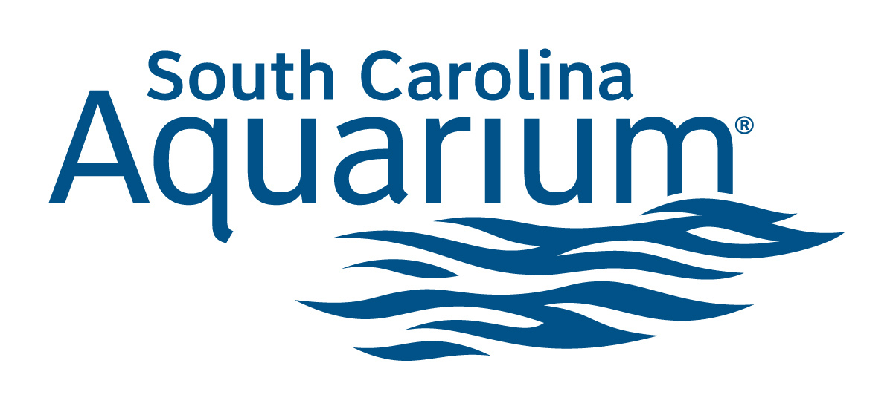

Charleston Aquarium
On the east coast, we are very limited in the amount of care we can give our sea turtles because of our lack in sea turtle hospitals. There is one in North Carolina and some in Florida.
Fortunately, a sea turtle hospital has been placed right inside of our Charleston Aquarium!
There are tours for our sea turtle hospital until May 31. Purchase tickets here. 
An inside look at the
Charleston Aquarium
The Charleston Aquarium is a beautiful place with a great staff. I have been attending their tours since I was little and have always noticed how clean the aquarium always is, how friendly and knowledgable the workers were, and how the animals were treated.